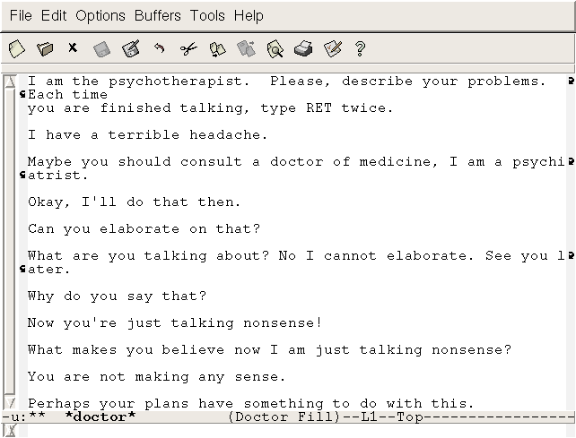
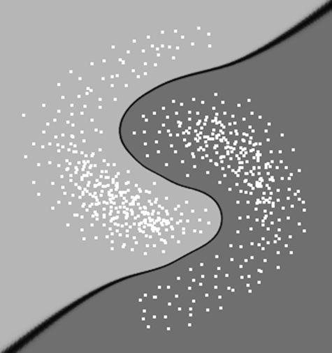
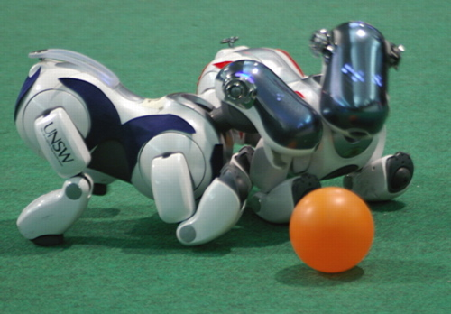

<!DOCTYPE html>
<html lang="en">
  <head>
    <meta charset="utf-8" />
    <meta name="viewport" content="width=device-width, initial-scale=1.0, maximum-scale=1.0, user-scalable=no" />

    <title>Histoire de l'IA</title>
    <link rel="shortcut icon" href="./favicon.ico"/>
    <link rel="stylesheet" href="./dist/reveal.css" />
    <link rel="stylesheet" href="assets/theme/myblack.css" id="theme" />
    <link rel="stylesheet" href="./css/highlight/zenburn.css" />

  </head>
  <body>
    <div class="reveal">
      <div class="slides"><section ><section data-markdown><script type="text/template">

<head><style>
        .column5{ width: 50%; float:left;}
</style>
<style>
        .column3{ width: 30%; float:left;}
</style>
<style>
        .column7{ width: 70%; float:left;}
</style>
<style>
.table
{
    border-collapse: collapse;
}
</style>
<style>
  .td, .th 
{
  border: 1px solid white;
}
</style>
</head>

## - Intelligence Artificielle - Historique et enjeux
### À quoi rèvent les programmes d'IA ?
#### LITIS - UFRST
[D. Olivier](http://litis.univ-lehavre.fr/~olivier/PagePerso)</script></section><section data-markdown><script type="text/template">## De moutons électriques ?
<!-- .element: style="width:300px" --></script></section></section><section ><section data-markdown><script type="text/template">
# Liminaire</script></section><section data-markdown><script type="text/template">## De quoi va-t-on parler ?
* Contextualisation
  - Intelligence ?
  - Intelligence collective, sociale, en essaim ;
  - Intelligence Artificielle.
* Histoire de l'IA et ses promesses
* Success story
  - IA, apprentissage (machine learning), apprentissage profond (deep learning) ;
  - ...
* Discussion

<aside class="notes"><p>Je n&#39;exposerai ici qu&#39;un point de vue personnel. Il n&#39;y a pas consensus, l&#39;histoire de l&#39;IA est encore trop récente pour que cela se fasse
et c&#39;est une discipline encore trop en évolution pour en fixer les limites. Néanmoins force est de constater quand on se retourne sur le passé
de l&#39;IA que de nombreuses annonces ont été faites et peu se son réalisées dans les délais prévus.</p>
</aside></script></section></section><section ><section data-markdown><script type="text/template"># Contextualisation</script></section><section data-markdown><script type="text/template">## Intelligence(s) ?
<div class="column5" style="font-size:70%">
<ul>
<li> Difficile à définir ;</li>
<li> "Donnons la parole" à quelques scientifiques :</li>
  <blockquote>C’est ce qui rend difficile la distinction entre une tâche réalisée par un être humain ou par une machine. (Turing)</blockquote>
  <blockquote>C’est ce qui permet la survie de l’individu le plus apte. (Darwin)</blockquote>
  <blockquote>C’est ce qui fait que cela fonctionne. (Edison)</blockquote>
  <blockquote>Lorenz "C’est collectif et cela émerge du comportement collectif. (Lorenz)</blockquote>
</ul>
</div>
<div class="column5">
  
</div></script></section><section data-markdown><script type="text/template">## Intelligences

<div class="column5" style="font-size:90%">
<ul>
<li> Pas de relation d'ordre</li>
  <ul>
  <li>Scientifiques ;
  <li>Artistes ;
  <li>Écrivains ;
  <li>Peintres ;
  <li>Musiciens ;
  <li>Orateurs ;
  <li>Bricoleurs
  <li> ....
  </ul>
</ul>
</div>
<div class="column5" style="font-size:90%">
<blockquote>
Entre nous soit dit bonne gens, pour reconnaître que l’on n’est pas intelligent.
Il faudrait l’être.
</blockquote>
Georges Brassens. Ceux qui ne pensent pas comme nous.
</div></script></section><section data-markdown><script type="text/template">## Intelligence - expertise
<div class="column5">
  
</div>
<div class="column5">
  <ul>
    <li>Résolution de problème - Capacité à atteindre différents objectifs ;</li>
    <li>Ensemble d'expertise dans un grand nombre de domaine ;</li>
    <li>Capacité à acquérir une expertise .... apprentissage du savoir et du savoir faire, adaptabilité.</li>
</div>

<aside class="notes"><ul>
<li>Il n&#39;y a pas d&#39;échelle linéaire de l&#39;intelligence, c&#39;est un espace à n dimensions. J&#39;ai choisi la toile d&#39;araignée pour représenter cela
et les fils radiaux sont les axes de l&#39;expertise, plus ils sont longs plus on est expert d&#39;une certaine façon. L&#39;inconvénient de cette représentation
est le coté discret alors que c&#39;est continu.</li>
<li>Certains objectifs sont atemporel et non lié sur une accumulation de connaissance (ondes gravitationnelles), d&#39;autres le sont.</li>
<li>Puis je être un expert sur l&#39;exploration de mars en tant qu&#39;individu ? NON Il nous faut être un superindividu !</li>
</ul>
</aside></script></section><section data-markdown><script type="text/template">## Intelligence collective, sociale, en essaim
<div class="column5">
  
</div>
<div class="column5">
  
</div>

<aside class="notes"><ul>
<li>émergence du langage, de l&#39;écrit, de l&#39;imprimerie, la technologie, un réseau d&#39;interaction planétaire</li>
<li>Intelligence augmentée - Robot exploration de mars</li>
<li>en parallèle la nature développe sur des temps long des stratégies semblable.</li>
<li>La conquête de la Lune, les ondes gravitationnelles ......</li>
<li>Le chasseur cueilleur du paléolithique 50 000 ans avant notre ère.</li>
</ul>
</aside></script></section><section data-markdown><script type="text/template">## Intelligence artificielle
<!-- .element: style="width:350px" --></script></section><section data-markdown><script type="text/template">## Intelligence artificielle
### De _Hello word_ à _je pense donc je suis_
* IA faible
  * Le programme d'IA ne fait que reproduire un comportement spécifique, mais pas son fonctionnement.
* IA forte
  - Le programme d'IA a des "états cognitifs".
  - Pensées, mémoire, représentations mentales, schémas de la pensée ...</script></section><section data-markdown><script type="text/template">## Intelligence artificielle
### Anthropomorphisme - rationalité
| | Humain | Rationalité |
|--|---|--
|Processus de pensée  | Penser comme un humain | Penser rationnellement |
| Comportement  | Agir comme un humain | Agir rationnellement |
|              | **Sciences cognitives**  | **Approches logiques, mathématiques** |
|              | Jeu de l'imitation | Agir pour atteindre un objectif |</script></section><section data-markdown><script type="text/template">## Intelligence artificielle

* Simuler sur des ordinateurs les différentes facultés cognitives — la perception, l’apprentissage, la mémoire, les fonctions exécutives, communicatives … — dans le but de mieux comprendre ces fonctions mais aussi de rendre des services liés à leur automatisation.
  - Vision historique : John McCarthy et Marvin Lee Minsky.
* Entité capable de percevoir son environnement, de construire des représentations de cette perception, puis de faire des calculs sur ces représentations, afin de décider et d’agir.
  - Vision moderne.
* Machine pensante, H+, vers la singularité.<!-- .element: class="fragment" -->
  - Bof, bof pour le moment<!-- .element: class="fragment" -->

<aside class="notes"><ul>
<li>John McCarthy : père du Lisp</li>
<li>Minsky - problème de Turing livre de SF. La sociéte de l&#39;esprit. Frame concept précurseur de l&#39;objet ou même des acteurs.</li>
</ul>
<p>Beaucoup de fantasme sur le dernier point non construit sur des éléments scientifiques, mais sur des éléments d&#39;autorité.</p>
</aside></script></section></section><section ><section data-markdown><script type="text/template"># Histoire</script></section><section data-markdown><script type="text/template">## Survol historique
</script></section><section data-markdown><script type="text/template">## Survol historique - autour des jeux
</script></section><section data-markdown><script type="text/template">## Des premiers propos - 1948
 En réponse à une présentation lors d'un congrés comme quoi il était impossible qu'une machine pense.
 <blockquote>
 &ldquo;You insist that there is something a machine cannot do.
 If you will tell me precisely what it is that a machine cannot do,
 then I can always make a machine which will do just that!&rdquo;<br>
  John Von Neumann
</blockquote></script></section><section data-markdown><script type="text/template">## Un début discret - 1949
  <ul>
    <li>Claude Shannon exprime comment un ordinateur pourrait jouer aux échecs</li>
  </ul>

  <blockquote>
    <div style="text-align:justify; font-size:20px">
    &ldquo;The chess machine is an ideal one to start with, since:
    (1) the problem is sharply defined both in allowed operations (the moves) and in the ultimate goal (checkmate);
    (2) it is neither so simple as to be trivial nor too difficult for satisfactory solution;
    (3) chess is generally considered to require ‘thinking’ for skillful play; a solution of this problem will force us either to admit the possibility of a mechanized thinking
    or to further restrict our concept of ‘thinking’; (4) the discrete structure of chess fits well into the digital nature of modern computers. …
    It is clear then that the problem is not that of designing a machine to play perfect chess (which is quite impractical) nor one which merely plays legal chess (which is trivial).
    We would like to play a skillful game, perhaps comparable to that of a good human player.&rdquo;
  </div>
  </blockquote></script></section><section data-markdown><script type="text/template">## Un début discret - 1949
<div style="float:left;width:450px;font-size:90%;">
      <ul>
        <li> Basée sur des états&nbsp;;</li>
        <li> Idée de Shannon : Minimax (Th. Von Neumann 1928)&nbsp;;</li>
        <li> Basée sur une exploration exhaustive&nbsp;;</li>
        <li> Arbre de jeu&nbsp;;</li>
        <li> Fonction d'évaluation. </li>
      </ul>
      <p class="fragment" data-fragment-index="1">Problème : <strong>explosion combinatoire</strong> </p>
</div>
<div style="float:left;width:450px;font-size:70%;"><br>
      <br>
      <caption><span style="font-size:10pt;">Arbre MinMax.<br clear="all" />
</div></script></section><section data-markdown><script type="text/template">## Le test de Turing - 1950
<ul>
  <li>Jeu de l'imitation (test de Turing inventé par A.C. Clarke 2001 l'Odyssée de l'espace)&nbsp;;</li>
  <li>A rapprocher de la cinquième partie du Discours de la méthode de Descartes :</li>
      <ul>
          <li>Imaginons un automate fabriqué par un artisan doué d'une habileté supérieure, et imitant parfaitement l'apparence et le comportement d'un être humain ;
            nous aurions toujours, soutient Descartes, deux moyens de ne pas confondre cet automate avec un homme véritable : la parole et l'action réfléchie.
          </li>
      </ul>
  <li>Présenté et discuté (si j'ai le temps) un peu plus tard.</li>
  <li>http://www.turingarchive.org/</li>
</ul></script></section><section data-markdown><script type="text/template">## <a href="https://fr.wikipedia.org/wiki/Turochamp">TuroChamp</a> - 1951
<p> <br> </p>
<div style="float:left;width:450px;font-size:90%;">
  <ul>
    <li> Programme proposé par Alan Turing&nbsp;;</li>
    <li> Considéré comme le premier programme de jeu d'échec&nbsp;;</li>
    <li> Non implanté à l'époque car nécessitant trop de mémoire&nbsp;;</li>
    <li> Turing l'a exécuté manuellement et  <p class="fragment" data-fragment-index="1"><strong>il a perdu ! </strong> </p></li>
  </ul>
</div>
  <div style="float:left;width:450px;font-size:70%;"><br>
    <br>
    <caption><span style="font-size:10pt;">Alan Turing<br clear="all" />
</div></script></section><section data-markdown><script type="text/template">## Georgetown-IBM expérience - 1954
<ul>
  <li>Traduction automatique&nbsp;;</li>
  <li>60 phrases en russe vers l'anglais&nbsp;;</li>
  <li>Approche lexicographique&nbsp;;</li>
  <li>Mi pyeryedayem mislyi posryedstvom ryechyi.  	We transmit thoughts by means of speech. Nous transmettons des pensées par la parole.</li>
</ul></script></section><section data-markdown><script type="text/template">## La naissance de l'IA - 1956
<div style="float:left;width:450px;font-size:70%;">
    <p> <br> </p>
  <ul>
    <li> Congrès de Dartmouth&nbsp;;</li>
      <ul>
        <li> Organisé par Marvin Minsky, John McCarthy, Claude Shannon et Nathan Rochester&nbsp;;</li>
         <li> Participants : Ray Solomonoff, Oliver Selfridge, Trenchard More, Arthur Samuel, Allen Newell et Herbert A. Simon&nbsp;;</li>
         <li> Démonstration par Newell et Simon de "Logic Theorist"&nbsp;;</li>
         <li> McCarthy propose "Artificial Intelligence" comme nom du champ scientifique.</li>
      </ul>
  </ul>
</div>
<div style="float:left;width:450px;font-size:70%;"><br>
  <blockquote>
    &ldquo;Every aspect of learning or any other feature of intelligence can be so precisely described that a machine can be made to simulate it.&rdquo;
  </blockquote>
</div></script></section><section data-markdown><script type="text/template">## La théorie devient du code - 1956
<div style="float:left;width:450px;font-size:70%;">
  <p> <br> </p>
  <ul>
    <li>Idée de Samuel : l'<a href="https://www.cs.virginia.edu/~evans/greatworks/samuel1959.pdf">apprentissage</a>&nbsp;;</li>
    <li>Basé sur Minimax&nbsp;;</li>
    <li>Le programme devient meilleur au fil du temps sans intervention humaine,</li>
        <ul>
          <li> "Rote-learning" (par coeur), stocke les valeurs de certaines positions précédemment évaluée avec Minimax&nbsp;;</li>
          <li> "Apprentissage par la généralisation", modif de la fonction d'évaluation en fonction de résultat d'ancienne partie.</li>
        </ul>
  </ul>
</div>
  <div style="float:left;width:450px;font-size:70%;">
    <br>
    <caption><span style="font-size:10pt;">Apprentissage par coeur<br clear="all" />
</div></script></section><section data-markdown><script type="text/template">## Logic theorist - 1956
<div style="float:left;width:450px;font-size:70%;">
  <p> <br> </p>
  <ul>
    <li>Allen Newell, Hebert A. Simon et Cliff Shaw</a>&nbsp;;</li>
    <li>Construction d'un arbre de recherche&nbsp;;</li>
    <li>Démonstration de thèorème&nbsp;;</li>
    <li>Démontré 38 des 52 théorèmes de "Principia Mathématica (ch2)"&nbsp;;</li>
    <li>Fourni une démonstration plus élégante d'un des théorèmes. </li>
  </ul>
</div>
  <div style="float:left;width:450px;font-size:70%;">
    <br>
    <caption><span style="font-size:10pt;">Principia Mathematica<br clear="all" />
</div></script></section><section data-markdown><script type="text/template">## General Problem Solver - 1957
<ul>
  <li>Allen Newell, Hebert A. Simon et Cliff Shaw</a>&nbsp;;</li>
  <li>Basé sur les clauses de Horn, logique des prédicats&nbsp;;</li>
  <li>Notion d'heuristique&nbsp;;</li>
  <li>Proche des systèmes de production, préfigure les systèmes experts.</li>
</ul></script></section><section data-markdown><script type="text/template">## Programmation symbolique - 1958
<div style="float:left;width:450px;font-size:70%;">
<ul>
  <li> LISP (LISt Processing) - McCarthy&nbsp;;</li>
  <li> Langage d'abord fonctionnel&nbsp;;</li>
  <li> Basé sur le lambda calcul&nbsp;;</li>
  <li> Syntaxe parenthésée sous forme de S-expression&nbsp;;</li>
  <li> Permet la métaprogrammation, programmes qui se modifient&nbsp;;</li>
</ul>
<pre><code data-trim data-noescape>
(defun factorial (n)
  (if (= n 0) 1
      (* n (factorial (- n 1)))))
</code></pre>
</div>
<div style="float:left;width:450px;font-size:70%;"><br>
<br>
<caption><span style="font-size:10pt;">John McCarthy<br clear="all" />
</div></script></section><section data-markdown><script type="text/template">##  Réseau de neurones - 1958
<div style="float:left;width:450px;font-size:70%;">
<p> <br> </p>
<ul>
  <li>Le perceptron - Frank Rosenblat  à partir des travaux de McCulloch et Pitts + Hebbs&nbsp;;</li>
  <li>Inspiré du système visuel&nbsp;;</li>
  <li>Capable d'apprentissage par correction  d'erreur en modifiant les poids des signaux&nbsp;;</li>
  <li>En 69 Minsky et Papert montrent que le perceptron ne peut pas faire de OU exclusif&nbsp;;</li>
  <li>=> Pas de pb non linéaire&nbsp;;</li>
  <li>Oublié jusqu'en 1982, renaît avec Hopfield.</li>
</ul>
</div>
<div style="float:left;width:450px;font-size:70%;">
<br>
<caption><span style="font-size:10pt;">Réseau de neurones<br clear="all" />
  <ul>
   <li>une couche de cellules d’association, neurones formels&nbsp;;</li>
   <li>Une couche d’unités sensorielles&nbsp;;</li>
   <li>une couche de cellules de décisions, sortie du perceptron.</li>
</ul>
</div></script></section><section data-markdown><script type="text/template">## Les programmes commencent à gagner - 1958
  <div style="float:left;width:450px;font-size:70%;">
<ul>
  <li>Performance modeste&nbsp;;</li>
  <li>Gagne face à des débutants&nbsp;;</li>
  <li>Amélioration de MiniMax avec la coupure alpha/beta&nbsp;;</li>
  <li>Permet d'augmenter la profondeur de recherche.</li>
</ul>
</div>
<div style="float:left;width:450px;font-size:70%;">
<br>
<caption><span style="font-size:10pt;">Coupure alpha,beta<br clear="all" />
</div></script></section><section data-markdown><script type="text/template">## Geometry theorem proving machine - 1959
<div style="float:left;width:450px;font-size:70%;">
<ul>
  <li>Herbert Gelernter (IBM)&nbsp;;</li>
  <li>Fonctionnement en arrière, on part du but et on remonte&nbsp;;</li>
  <li>Première démonstration géométrique considérée comme plus élégante que celles des manuels scolaires&nbsp;;</li>
  <li>Abandonné par IBM.</li>
</ul>
</div>
<div style="float:left;width:450px;text-align:justify;font-size:60%;border:1px solid grey;">
 « Dans un triangle, l’angle B est égal à l’angle C. Démontrez que le côté AB est égal au côté BC »<br>
 Démonstration non pas en considérant les deux sous-triangles découpés par la hauteur<br>
 « Considérons les triangles ABC et ACB : ces deux triangles sont semblables
  et possèdent des côtés correspondants BC et CB égaux. Ils sont donc égaux et AB est en conséquence égal à BC »
</div></script></section><section data-markdown><script type="text/template">## Intégration - 1961
<ul>
  <li>Utilise la méthodologie de Logic Theorist&nbsp;;</li>
  <li>Exploration d'arbres ET/OU&nbsp;;</li>
  <li>Donnera naissance à MACSYMA (69), puis Maxima ou Mathematica.</li>
</ul></script></section><section data-markdown><script type="text/template">## Algorithme d'unification - 1965
<ul>
<li>Généralise le modus ponens&nbsp;;</li>
<li>Robinson&nbsp;;</li>
<li>Règle d'inférence utilisée en logique du premier ordre&nbsp;;</li>
<li>Utilisé par Prolog.</li>
</ul></script></section><section data-markdown><script type="text/template">## ELIZA - 1965
<div style="float:left;width:450px;font-size:70%;">
<ul>
<li>Joseph Weizenbaum&nbsp;;</li>
<li>Simule un psychothérapeute rogérien&nbsp;;</li>
<li>Reformule les affirmations en questions.</li>
</ul>
</div>
<div style="float:left;width:450px;font-size:70%;">
<br>
<caption><span style="font-size:10pt;">ELIZA<br clear="all" />
</div></script></section><section data-markdown><script type="text/template">## Dendral - 1965
<ul>
<li>Edward Feigenbaum, Bruce Buchanan, Joshua Lederberg (médecin) et Carl Djerassi (chimiste)&nbsp;;</li>
<li>Premier système expert&nbsp;;</li>
<li>Identification des constituants chimiques d'un matériau à partir de spectrométrie de masse et de résonance magnétique nucléaire&nbsp;;</li>
<li>Écrit en LISP&nbsp;;</li>
<li>La première version mélangeait connaissance et traitement&nbsp;;</li>
<li>Ensuite META-Dendral.</li>
</ul></script></section><section data-markdown><script type="text/template">## Mac Hack - 1968
<div style="float:left;width:450px;font-size:70%;">
<ul>
<li>Richard D. Greenblatt MIT&nbsp;;</li>
<li>Machine-Aided Cognition&nbsp;;</li>
<li>Premier programme d'échec à jouer dans des tournois (humains)&nbsp;;</li>
<li>Premier à avoir un classement&nbsp;;</li>
<li>Premier à gagner en tournoi contre des joueurs classés.</li>
</ul>
</div>
<div style="float:left;width:450px;font-size:70%;">
<br>
<caption><span style="font-size:10pt;">Mac Hack<br clear="all" />
</div></script></section><section data-markdown><script type="text/template">## Le tour du Go - 1968
<br>
<caption><span style="font-size:10pt;">Go vs échec<br clear="all" /></script></section><section data-markdown><script type="text/template">## Jeu de GO - 1968
<div style="float:left;width:450px;font-size:100%;">
<ul>
<li>Difficile d'utiliser un arbre de recherche (explosion combinatoire)&nbsp;;</li>
<li>Représentation proche de celle d'un joueur&nbsp;;</li>
<li>Recherche de forme&nbsp;;</li>
<li>Utilisation d'une fonction de hachage&nbsp;;</li>
<li>Idée d'Alfred Zobrist dans son PhD.</li>
</ul>
</div>
<div style="float:left;width:450px;font-size:70%;">
<br>
<caption><span style="font-size:10pt;">Les patterns vus par Zobrist<br clear="all" />
</div></script></section><section data-markdown><script type="text/template">## Shakey the robot - 1969
<div style="float:left;width:450px;font-size:100%;">
<ul>
<li> Premier robot capable de raisonner sur ses actions&nbsp;;</li>
<li> Transformée de Hough (reconnaissance de ligne)&nbsp;;</li>
<li> Algorithme A*&nbsp;;</li>
<li> Graphe de visibilité (sommets accessibles).</li>
</ul>
</div>
<div style="float:left;width:450px;font-size:70%;">
<br>
<caption><span style="font-size:10pt;">Le robot Shakey<br clear="all" />
</div></script></section><section data-markdown><script type="text/template">## Publication de perceptrons - 1969
<div style="float:left;width:450px;font-size:100%;">
<ul>
<li>Marvin Minsky et Seymour Papert&nbsp;;</li>
<li>Démontre l'intérêt du perceptron&nbsp;;</li>
<li>MAIS montre que l’algorithme du perceptron ne converge que si les
  classes sont linéairement séparables&nbsp;;</li>
<li>Annonce l'hiver de l'IA jusqu'en ~ 80</li>
</ul>
</div>
<div style="float:left;width:450px;font-size:70%;">
<br>
<caption><span style="font-size:10pt;">Frontière de discrimination non linéaire<br clear="all" />
</div></script></section><section data-markdown><script type="text/template">## SHRDLU et les micro-mondes - 1970
<div style="float:left;width:450px;font-size:70%;">
<ul>
<li>Un des premiers programmes informatiques de compréhension du langage naturel &nbsp;;</li>
<li>Terry Winograd au MIT&nbsp;;</li>
<li>Écrit en Micro Planner et en Lisp &nbsp;;</li>
<li>Monde des blocs&nbsp;;</li>
</ul>
<pre style="font-size:40%;">
Personne : Prends un gros bloc rouge.
SHRDLU : OK.
Personne : Attrape la pyramide.
SHRDLU : Je ne comprends pas de quelle pyramide
vous parlez.
Personne (changeant d’avis) : Trouve un bloc
plus grand que celui que tu tiens et mets-le dans la boîte.
SHRDLU : Par « le », je suppose que vous voulez dire
« le bloc plus grand que celui que je tiens ».
SHRDLU : OK.
Personne : Que contient la boîte ?
SHRDLU : La pyramide bleue et le bloc.
</pre>
</div>
<div style="float:left;width:450px;font-size:70%;">
<br>
<caption><span style="font-size:10pt;">Le monde des blocs<br clear="all" />
</div></script></section><section data-markdown><script type="text/template">## Prolog - 1972
<div style="float:left;width:450px;font-size:100%;">
<ul>
<li> A. Colmerauer et P. Roussel, Marseille&nbsp;;</li>
<li> PROgrammation LOGique&nbsp;;</li>
<li> Basé sur le calcul des prédicats du premier ordre&nbsp;;</li>
<li> Unification, récursivité et retour sur trace&nbsp;;</li>
<li> Négation (plus tard).</li>
</ul>
</div>
<div style="float:left;width:450px;font-size:70%;">
 <pre  style="float:left;font-size:40%;"><code data-trim data-noescape>
parent(jorge, andres).
parent(andres, felipe).

grandparent(X,Y) :- parent(X, Z), parent(Z, Y).

? grandparent(jorge,_).
%true
%il y a assez d'information pour dire
%que jorge a un grandparent connu.

%Hypothèse du monde clos → il n'y a pas assez d'information
%pour arriver à une conclusion -> false
? grandparent(andres,_).
%false
%Négation par l'échec appuyé sur l'hypothèse du monde clos
? not(grandparent(andres,_)).
%true
</code></pre>
</div></script></section><section data-markdown><script type="text/template">## MYCIN - 1974
<div style="float:left;width:450px;font-size:100%;">
<ul>
  <li>Ted Shortliffe&nbsp;;</li>
  <li>Système expert à base de règle en présence d'incertain&nbsp;;</li>
  <li>Coefficients de vraissemblance&nbsp;;</li>
  <li>Donnait dans 69% des cas la bonne thérapie&nbsp;;</li>
  <li>Meilleurs résultats que les experts du domaine.</li>
</ul>
</div>
<div style="float:left;width:450px;font-size:50%;">
$$
{\displaystyle CF(x,y)={\begin{cases}X+Y-XY \text{ si } X,Y>0\\\ X+Y+XY \text{ si } X,Y<0\\\ (X+Y)/(1-\min(|X|,|Y|)) \text{ sinon}\end{cases}}}
$$</script></section><section data-markdown><script type="text/template">## Les frames (cadres) - 1975
  <ul>
    <li>Marvin Minski&nbsp;;</li>
    <li>Part du constat qu'il est difficile de représenter des choses simples comme une chaise en logique&nbsp;;</li>
    <li>Schank parle d'approches alogiques ou brouillonnes&nbsp;;</li>
    <li>Opposition aux paradigmes dit élégants, comme LISP, PROLOG ...</li>
    <li>Frame : englobe toutes des hypothèses de culture générale d'un thème donné, mais</li>
      <ul>
        <li>  Les faits ne sont pas toujours vrais&nbsp;;</li>
        <li>  les déductions à partir de ces faits ne sont pas toutes logiques.</li>
      </ul>
    <li class="fragment">Origine des langages orientés objets&nbsp;?</li>
  </ul></script></section><section data-markdown><script type="text/template">## Prix Nobel - 1978
<ul>
<li>Hebert Simon&nbsp;;</li>
<LI>Prix Nobel d'économie&nbsp;;</li>
<li>Rationalité limitée&nbsp;;</li>
<li>Satisficing : satisfying (satisfaisant) et sufficing (suffisant)&nbsp;;</li>
<li>Solution "suffisamment bonne" plutôt "qu'optimale" si l'exploration de toutes les alternatives "coûte trop cher".</li>
</ul></script></section><section data-markdown><script type="text/template">## Backgammon - 1979
<div style="text-align:left;float:left;width:450px;font-size:100%;">
<li>Hans Berliner&nbsp;;</liStanford Carton du monde est battu par BKG&nbsp;;</li>
<li>Utilise la logique floue&nbsp;;
<li>La victoire 7-1 était due à en partie de la chance&nbsp;;</li>
</div>
<div style="float:left;width:450px;font-size:70%;">
<br>
<caption><span style="font-size:10pt;">BKG<br clear="all" />
</div></script></section><section data-markdown><script type="text/template">## Logique non monotone - 1979
  <ul>
    <li>McDermott, Jon Doyle et John McCarthy&nbsp;;</li>
    <li>Raisonnement non monotone&nbsp;:</li>
      <ul>
        <li> Tout raisonnement qui permet d'établir des conclusions qui pourront être invalidées en présence de nouvelles informations&nbsp;;</li>
        <li> Conclusion basées sur à la fois la présence d'information et l'absence&nbsp;;</li>
        <li>Si je sais <span style="font-family:Courier New;">A</span> en l'absence de <span style="font-family:Courier New;">B</span> je peux déduire <span style="font-family:Courier New;">C</span>.</li>
      </ul>
  </ul></script></section><section data-markdown><script type="text/template">## Stanford Cart - 1979
  <div style="float:left;width:450px;font-size:100%;">
    <ul>
      <li>Hans Moravec, MIT&nbsp;;</li>
      <li>Premier véhicule autonome évitant des obstacles.</li>
    </ul>
  </div>
  <div style="float:left;width:450px;font-size:70%;">
    <video  controls src="./videos/Cart.mov"></video>
  </div></script></section><section data-markdown><script type="text/template">## Machines LISP - 1980
<div style="float:left;width:450px;font-size:100%;">
<ul>
<li>Initiés par Richard Greenblatt et Thomas Knight en 73&nbsp;;</li>
<li>Noftsker et Greenblatt&nbsp;;</li>
<li>Début de la commercialisation&nbsp;;</li>
</ul>
</div>
<div style="float:left;width:450px;font-size:70%;">
<br>
<caption><span style="font-size:10pt;">Machine LISP<br clear="all" />
</div></script></section><section data-markdown><script type="text/template">## Machine de 5ème génération - 1981
<ul>
<li>Lampes (1), transistors et diodes (2), circuits intégrés (3), microprocesseurs (4)&nbsp;;</li>
<li>Projet Japonais, ordinateur massivement parallèle&nbsp;;</li>
<li>Basé sur Prolog&nbsp;;</li>
<li>Projet Alvey (GB) en réaction.</li>
</ul></script></section><section data-markdown><script type="text/template">## Réseau de neurone de Hopfield - 1982
<div style="float:left;width:450px;font-size:100%;">
<ul>
<li>Réseau récurrent : systèmes dynamiques constitués de neurones interconnectés interagissant non-linéairement&nbsp;;</li>
<li>Asynchrone : un seul neurone est mis à jour à chaque unité de temps&nbsp;;</li>
<li>Chaque neurone est connecté à tous les autres&nbsp;;</li>
<li>Un neurone ne possède ni couche d’entrée, ni couche de sortie&nbsp;;</li>
<li>Les neurones ont un état binaire.</li>
</ul>
</div>
<div style="float:left;width:450px;font-size:70%;">
<br>
<caption><span style="font-size:10pt;">Neurone de Hopfield<br clear="all" />
</div></script></section><section data-markdown><script type="text/template">## Algèbre d'intervalle - 1983
<div style="float:left;width:450px;font-size:100%;">
<ul>
<li>Proposés par Allen&nbsp;;</li>
<li>Permet des raisonnements spatio-temporels&nbsp;;</li>
<li>Définit les relations possibles entre des intervalles de temps&nbsp;;</li>
<li>Propose une table de composition.</li>
</ul>
</div>
<div style="float:left;width:450px;font-size:60%;">
<table style="border: 2px solid white;">
<tr>
<td><span style="font-family:Courier New;">x < y</span></td>
<td><span style="font-family:Courier New;">x</span> se déroule avant <span style="font-family:Courier New;">y</span></td>
</tr>
<tr>
<td><span style="font-family:Courier New;">x M y</span></td>
<td><span style="font-family:Courier New;">x</span> rencontre <span style="font-family:Courier New;">y</span> (meet)</td>
</tr>
<tr>
<td><span style="font-family:Courier New;">x O y</span></td>
<td><span style="font-family:Courier New;">x</span> rencontre <span style="font-family:Courier New;">y</span> (overlap)</td>
</tr>
<tr>
<td><span style="font-family:Courier New;">x S y</span></td>
<td><span style="font-family:Courier New;">x</span> démarre <span style="font-family:Courier New;">y</span> (start)</td>
</tr>
<tr>
<td><span style="font-family:Courier New;">x D y</span></td>
<td><span style="font-family:Courier New;">x</span> se déroule pendant <span style="font-family:Courier New;">y</span> (during)</td>
</tr>
<tr>
<td><span style="font-family:Courier New;">x F y</span></td>
<td><span style="font-family:Courier New;">x</span> termine <span style="font-family:Courier New;">y</span> (finish)</td>
</tr>
<tr>
<td><span style="font-family:Courier New;">x = y</span></td>
<td><span style="font-family:Courier New;">x</span> se déroule avant <span style="font-family:Courier New;">y</span></td>
</tr>
</table>
</div></script></section><section data-markdown><script type="text/template">## Les réseaux de neurones reviennent - 1984
<ul>
<li>Réseau dynamique, réseau de Hopfield (82)&nbsp;;</li>
<li>Carte auto-adaptatrice de Kohonen (84)&nbsp;;</li>
<li>Apprentissage supervisé avec l'algorithme de rétropropagation du gradient&nbsp;;</li>
<li>On commence à parler d'apprentissage profond (Lecun). </li>
</ul></script></section><section data-markdown><script type="text/template">## Voiture autonome - 1986
<ul>
<li>Ernst Dickmanns (Munich)&nbsp;;</li>
<li>Dans des rues vides&nbsp;;</li>
<li>55 mph ~88 km/h.</li>
</ul></script></section><section data-markdown><script type="text/template">## Société de l'esprit - 1986
<div style="float:left;width:450px;font-size:70%;">
<ul>
<li>Marvin Minsky&nbsp;;</li>
<li>Esprit = architecture d'agents élémentaires, indépendants, mais surtout hiérarchisés&nbsp;;</li>
<li>Agents&nbsp;:</li>
  <ul>
    <li>Les plus courants, les <span style="font-family:Courier New;">K-lines</span>, agent de mémoire à court terme servant à activer d'autres agents&nbsp;;</li>
    <li>Les <span style="font-family:Courier New;">nèmes</span> représentent les connaissanxes&nbsp;;</li>
    <li>Les <span style="font-family:Courier New;">nomes</span> traitent les connaissances&nbsp;;</li>
    <li>Les <span style="font-family:Courier New;">polynèmes</span> permettent d'activer des agents représentant des aspects différents d'un même objet&nbsp;;</li>
    <li>Les <span style="font-family:Courier New;">paranomes</span> permettent de manipuler simultanément différents modes de représentations des connaissances.&nbsp;;</li>
  </ul>
<li>Les agents de base se combinent pour générer des actions complexes&nbsp;;</li>
<li>Cerveau A = esprit, cerveau B contrôle le cerveau A.</li>
</ul>
</div>
<div style="float:left;width:450px;font-size:70%;">
<br>
<caption><span style="font-size:10pt;">Société de l'esprit<br clear="all" />
</div></script></section><section data-markdown><script type="text/template">## Architecture de subsomption - 1986
<div style="float:left;width:450px;font-size:90%;">
<ul>
  <li>R. Brooks pour de la robotique&nbsp;;</li>
  <li>Couches hiérarchisées, les plus hautes sont plus prioritaires&nbsp;;</li>
  <li>Plusieurs modules, chaque module étant responsable de la réalisation d'une tâche simple&nbsp;;</li>
  <li>Les couches hautes sont les plus abstraites.</li>
</ul>
</div>
<div style="float:left;width:450px;font-size:70%;">
<br>
<caption><span style="font-size:10pt;">Architecture de subsomption<br clear="all" /></span></caption>
</div></script></section><section data-markdown><script type="text/template">## Le second hiver de l'IA - 1987
<ul>
<li>De 1987 à 1993&nbsp;;
<li>Les machines dédiées sont de moins en moins utilisées&nbsp;;</li>
<li>Les systèmes experts ont un coût de maintenance trop élevé&nbsp;;</li>
<li>Les objectifs des ordinateurs de 5ème génération ne sont pas atteints.</li>
</ul></script></section><section data-markdown><script type="text/template">## Le début de la fin pour les humains - 1989
<ul style="font-size:90%;">
  <li>Sauf pour le Go&nbsp;;</li>
  <li>Deux orientations &nbsp;:</li>
    <ol>
      <li>Les ordinateurs deviennent plus puissant&nbsp;;</li>
        <ul>
          <li>Une base de données d'ouverture&nbsp;;</li>
          <li>Alpha-beta avec une fonction d'évaluation au petit oignon&nbsp;;</li>
          <li>Une base de données de données de fin de partie&nbsp;;</li>
          <li>-> Chinook (Dame), Deep Thought fonction d'évaluation apprise(Echec).</li>
        </ul>
      <li>Apprentissage par renforcement&nbsp;;</li>
        <ul>
          <li>Neurogammon, pas très bon au début !</li>
        </ul>
</ul></script></section><section data-markdown><script type="text/template">## Agents - 1990
<div style="float:left;width:450px;font-size:100%;">
  <ul>
    <li>Entité autonome qui perçoit par capteurs un environnement et agit par des actionneurs sur celui-ci
    <li>Il tend à atteindre un but&nbsp;;</li>
    <li>Il peut apprendre ou utiliser des connaissances éventuellement&nbsp;;</li>
    <li>Judea Pearl, Allen Newell pour les formes modernes.</li>
  </ul>
</div>
<div style="float:left;width:400px;font-size:70%;">
  <br>
  <caption><span style="font-size:10pt;">Agent réactif</span><br clear="all" />
    <br>
    <caption><span style="font-size:10pt;">Agent cognitif<br clear="all" />
  </div></script></section><section data-markdown><script type="text/template">## DART - 1991
<ul>
      <li>Dynamic Analysis and Replanning Tool&nbsp;;</li>
      <li>Utilise des agents intelligents&nbsp;;</li>
      <li>Planification dynamique&nbsp;;</li>
      <li>Utilisé pendant la première guerre du golfe&nbsp;;</li>
      <li>Logistique militaire.</li>
</ul></script></section><section data-markdown><script type="text/template">## TD-Gammon - 1992
<div style="float:left;width:450px;font-size:80%;">
      <ul>
        <li> Gerald Tesauro (IBM)&nbsp;;</li>
        <li> Réseau de neurones&nbsp;;</li>
        <li> Apprentissage par renforcement (Temporal Difference learning)&nbsp;;</li>
        <li> Apprend en jouant contre des versions antérieures de lui-même&nbsp;;</li>
        <li> Niveau de jeu légèrement inférieur aux meilleurs joueurs&nbsp;;</li>
        <li> Trouve des nouvelles stratégies&nbsp;;</li>
        <li> -> conduit à des progrès dans le jeu &nbsp;!</li>
      </ul>
    </div>
    <div style="float:left;width:450px;font-size:70%;">
      <br>
      <caption><span style="font-size:10pt;">TD-Gammon<br clear="all" />
      </div></script></section><section data-markdown><script type="text/template">## CHINOOK - 1994
<div style="float:left;width:450px;font-size:70%;">
        <ul>
          <li>Jonathan Schaeffer&nbsp;;</li>
          <li>Jeu de dame&nbsp;;</li>
          <li>Premier programme informatique à avoir gagné le titre de champion du monde dans une compétition d'un jeu de stratégie&nbsp;;</li>
          <li>En 90 participe au championnat du monde, 2ème&nbsp;;</li>
          <li>En 94 il est champion du monde&nbsp;;</li>
          <li>En 2007 papier "Checkers Is Solved" par Schaeffer <it>et al</it>&nbsp;;</li>
          <li>Meilleur résultat possible si deux joueurs jouent optimalement = partie nulle.</li>
        </ul>
      </div>
      <div style="float:left;width:450px;font-size:70%;">
        <br>
        <caption><span style="font-size:10pt;">Chinook<br clear="all" />
        </div></script></section><section data-markdown><script type="text/template">## DEEP BLUE - 1997
<div style="float:left;width:450px;font-size:80%;">
          <ul>
            <li>IBM&nbsp;;</li>
            <li>Deep Thought x Big Blue = Deep Blue&nbsp;;</li>
            <li>En 96 perd 4 à 2&nbsp;;</li>
            <li>En 97 gagne 3,5–2,5&nbsp;;</li>
            <li>Evalue 200 millions de positions par seconde&nbsp;;</li>
            <li>La victoire serait due à un bug !
            <li>Mais en 2006 Deep Fritz vs. Vladimir Kramnik sur un PC 2 Intel Core 2 Duo, 8 millions positions par second, 4 à 2.</li>
          </ul>
        </div>
        <div style="float:left;width:450px;font-size:70%;">
          <br>
          <caption><span style="font-size:10pt;">Kasparov vs. Deep Blue<br clear="all" />
          </div></script></section><section data-markdown><script type="text/template">## Logistello - 1997
<ul>
            <li>Michael Buro&nbsp;;</li>
            <li>Bat le champion du monde Takeshi Murakami 6–0.</li>
          </ul>
          <div style="float:center;font-size:70%;">
            <br>
            <caption><span style="font-size:10pt;">Logistello<br clear="all" />
            </div></script></section><section data-markdown><script type="text/template">## AIBO - 1999
<div style="float:left;width:450px;font-size:100%;">
          <ul>
            <li>AIBO (Artificial Intelligent roBOt) homonyme de 相棒 du japonais "compagnon", Sony&nbsp;;</li>
            <li>Robots autonomes et pouvant apprendre en fonction de stimuli provenant de l'environnement ou d'autres AIBO&nbsp;;</li>
            <li>Abandonné en 2007 par Sony.</li>
          </ul>
        </div>
        <div style="float:left;width:250px;font-size:70%;">
          <br>
          <caption><span style="font-size:10pt;">AIBO 1er proto<br clear="all" />
            <br>
          </div></script></section><section data-markdown><script type="text/template">## L'IA est remplacée par le smart ! - 2000 ...
<ul style="font-size:90%;">
              <li>L'IA a envahi beaucoup de domaine spécifique&nbsp;;</li>
              <li>HAL n'est pas là, mais ....&nbsp;;</li>
                <ul>
                  <li>Le smart : smart toys, smartphones, smart cities ....&nbsp;;</li>
                  <li>L'intelligence computationnelle &nbsp;:</li>
                    <ul>
                      <li>Réseaux de neurones&nbsp;;</li>
                      <li>La logique floue et d'autres&nbsp;;</li>
                      <li>Les algorithmes évolutionnistes (algorithmes génétiques et  programmation génétique&nbsp;;</li>
                      <li>L'Intelligence collective.&nbsp;;</li>
                    </ul>
            </ul>
              <li>Les robots arrivent&nbsp;;</li>
              <li>On commence à parler de singularité.</li>
            </ul></script></section><section data-markdown><script type="text/template">## ROOMBA - 2004
<div style="float:left;width:450px;font-size:100%;">
              <ul>
                <li>Socité iRobot&nbsp;;</li>
                <li>Aspirateur&nbsp;;</li>
                <li>Se recharge seul&nbsp;;</li>
                <li>Se déplace et evite les obstacles.</li>
              </ul>
            </div>
            <div style="float:left;width:450px;font-size:70%;">
              <br>
              <caption><span style="font-size:10pt;">Time lapse de Roomba<br clear="all" />
              </div></script></section><section data-markdown><script type="text/template">## Spirit et Opportunity 2004
<div style="float:left;width:450px;font-size:90%;">
                <ul>
                  <li>NASA et Caltech&nbsp;;</li>
                  <li>Navigation autonome à la surface de Mars&nbsp;;</li>
                  <li>Amarssissage : 4/01/2004 et 25/01/2004&nbsp;;</li>
                  <li>25 mai 2011 ensablage de Spirit&nbsp;;</li>
                  <li>Opportunity a roulé jusqu'au 15/05/18&nbsp;;</li>
                  <li>Le (15/05/18) 45.16 km.
                </ul>
              </div>
              <div style="float:left;width:450px;font-size:70%;">
                <br>
                <caption><span style="font-size:10pt;">Opportunity<br clear="all" />
                </div></script></section><section data-markdown><script type="text/template">## Actualité : persévérance
* Le moment de tous les dangers : 18 février 2021 vers 21h30 .... https://www.nasa.gov/nasalive
* Le signal radio émis par Perseverance met exactement 11 minutes et 22 secondes à parcourir à la vitesse de la lumière les 205 millions de kilomètres qui séparent la Terre de Mars
* Lancé le 30 juillet 2020, Perseverance a parcouru 471 millions de kilomètres, à environ 85 000 km/h.
* Dans l'atmosphère martienne, environ 50 km de descente pour rejoindre la surface de Mars.</script></section><section data-markdown><script type="text/template">## DARPA Grand Challenge 2004
<div style="float:left;width:450px;font-size:90%;">
                  <ul>
                    <li>DARPA, Defense Advanced Research Projects Agency&nbsp;;</li>
                    <li>2004 et 2005 Désert des Mojaves, 2007 parcours urbain&nbsp;;</li>
                    <li>Déplacement de manière autonome&nbsp;;</li>
                    <li>Moins de 10 heures pour le parcours&nbsp;;</li>
                    <li>Positionnement GPS et d'autres signaux disponibles pour les civils&nbsp;;</li>
                    <li>Fonctionnement entièrement autonome.</li>
                  </ul>
                </div>
                <div style="float:left;width:450px;font-size:70%;">
                  <br>
                  </div></script></section><section data-markdown><script type="text/template">## ASIMO - 2005
<div style="float:left;width:450px;font-size:80%;">
              <ul>
                <li>Honda&nbsp;;</li>
                <li>Advanced Step in Innovative Mobility,  « ashimo » (des jambes aussi) en japonais&nbsp;;</li>
                <li>Mémoire&nbsp;;</li>
                <li>Capacités de calcul&nbsp;;</li>
                <li>Identification des objets mobiles&nbsp;;</li>
                <li>Identification des gestes&nbsp;;</li>
                <li>Possibilité de serrer la main d'une personne quand celle-ci le sollicite, tout en gérant sa force&nbsp;;</li>
                <li>Reconnaissance vocale (possibilité de distinguer les voix et les bruits parasites)&nbsp;;</li>
                <li>Reconnaissance des visages et des êtres humains (suivre une personne, saluer une personne qui s'approche, s'adresser à une personne par son nom)&nbsp;;</li>
              </ul>
            </div>
            <div style="float:left;width:350px;font-size:70%;">
              <br>
              <caption><span style="font-size:10pt;">Première version ASIMO<br clear="all" />
              </div></script></section><section data-markdown><script type="text/template">              ## Google car - 2009
              <div style="float:left;width:450px;font-size:80%;">
                <ul>
                  <li>Sebastian Thrun, père de Google Street View&nbsp;;</li>
                  <li>Puis Chris Urmson, vainqueur challenge DARPA en 2007 (Carnegie Mellon)&nbsp;;</li>
                  <li>Deux types de véhicules autonomes&nbsp;:</li>
                    <ul>
                      <li>Des véhicules de série modifiés par Google&nbsp;;</li>
                      <li>Des véhicules électriques et autonomes entièrement conçus par Google&nbsp;;</li>
                    </ul>
                </ul>
              </div>
              <div style="float:left;width:450px;font-size:70%;">
                <video  controls src="./videos/GoogleCar.mp4"></video>
                </div></script></section><section data-markdown><script type="text/template">## WATSON - 2011
<div style="float:left;width:450px;font-size:70%;">
                  <ul>
                    <li>IBM - DeepQA research project&nbsp;;</li>
                    <li>Répondre à des questions formulées en langage naturel&nbsp;;</li>
                    <li>Remporte le jeu Jeopardy, face à 2 champions (+ 100 victoires)&nbsp;;</li>
                    <li>"Comprend" l’énoncé des questions&nbsp;;</li>
                    <li>Buzze pour prendre la main&nbsp;;</li>
                    <li>Trouve les réponses en quelques secondes&nbsp;;</li>
                    <li>Choisit le thème et la mise&nbsp;;</li>
                    <li>Problème ouvert contrairement au échec !!&nbsp;;</li>
                    <li>Passe t-il le test de Turing ?</li>
                  </ul>
                </div>
                <div style="float:left;width:450px;font-size:70%;">
                  <br>
                  <caption><span style="font-size:10pt;">16/02/2011 Jeopardy<br clear="all" />
                </div></script></section><section data-markdown><script type="text/template">## Assistant personnel intelligent - 2011
<ul>
                      <li>Reconnaissance vocale&nbsp;;</li>
                      <li>Traitement du langage naturel&nbsp;;</li>
                      <li>Synthèse vocale&nbsp;;</li>
                      <li>Siri (Apple), Google Now (google assistant actuellement), Cortana (Microsoft)&nbsp;;</li>
                      <li>Vers la vie digitale&nbsp;??</li>
                    </ul></script></section><section data-markdown><script type="text/template">## Autonomous Weapons - 2015

<iframe frameborder="0" width="100%" height="400pt" src="https://en.wikipedia.org/wiki/Lethal_autonomous_weapon
"></iframe>

[http://futureoflife.org/open-letter-autonomous-weapons](http://futureoflife.org/open-letter-autonomous-weapons)</script></section><section data-markdown><script type="text/template">## Deep Mind DQN  - 2015
<div style="float:left;width:450px;font-size:70%;">
              <ul>
                <li>Google&nbsp;;</li>
                <li>Réseau de neurone profond et apprentissage par renforcement&nbsp;;</li>
                <li>Jeu sur Atari ~ 1980, Pong, pacman...</li>
                <li>Algorithme capable d’apprendre directement de ses expériences&nbsp;;</li>
                <li>Très bons résultats, mais encore des pb sur les planifications longues.</li>
              </ul>
            </div>
            <div style="float:left;width:450px;font-size:70%;">
              <video  controls src="./videos/Breakout.mp4"></video>
            </div></script></section><section data-markdown><script type="text/template">## Deep Mind AlphaGo - 2015
<div style="float:left;width:450px;font-size:70%;">
                <ul>
                  <li>Jeu de Go&nbsp;;</li>
                  <li>Gagne contre le champion d'Europe&nbsp;;</li>
                  <li>Basé sur un arbre de recherche de Monté-carlo&nbsp;;</li>
                  <li>Utilise un réseau de neurone profond et de l'apprentissage par renforcement&nbsp;;</li>
                  <li>Apprendre à explorer les parties intéressantes de l'arbre&nbsp;;</li>
                  <li>Apprendre à évaluer le l'état du goban.</li>
                </ul>
              </div>
              <div style="float:left;width:450px;font-size:70%;">
                <video  controls src="./videos/alphaGo3.mp4"></video>
              </div></script></section><section data-markdown><script type="text/template">## Deep Mind AlphaGo - 2016
<ul>
                <li>Bat Lee Sedol&nbsp;;</li>
                <li>Triomphe de l'apprentissage profond&nbsp;?</li>
              </ul></script></section><section data-markdown><script type="text/template">## AlphaGo Zero
* Version améliorée d'AlphaGo ;
* Plus économe ;
* A appris en jouant uniquement contre lui-même ;
* Battu AlphaGo  100 à zéro, et a vaincu AlphaGo Master 89 à 11 ;
* AlphaZero a maîtrise les échecs en 4 heures, en battant le meilleur moteur d'échecs, StockFish 28 sur 100, 72 nuls ;
* Apparition d'une super expertise. <!-- .element: class="fragment highlight-blue" -->
</script></section></section></div>
    </div>

    <script src="./dist/reveal.js"></script>

    <script src="./plugin/markdown/markdown.js"></script>
    <script src="./plugin/highlight/highlight.js"></script>
    <script src="./plugin/zoom/zoom.js"></script>
    <script src="./plugin/notes/notes.js"></script>
    <script src="./plugin/math/math.js"></script>
    <script>
      function extend() {
        var target = {};
        for (var i = 0; i < arguments.length; i++) {
          var source = arguments[i];
          for (var key in source) {
            if (source.hasOwnProperty(key)) {
              target[key] = source[key];
            }
          }
        }
        return target;
      }

      // default options to init reveal.js
      var defaultOptions = {
        controls: true,
        progress: true,
        history: true,
        center: true,
        transition: 'default', // none/fade/slide/convex/concave/zoom
        plugins: [
          RevealMarkdown,
          RevealHighlight,
          RevealZoom,
          RevealNotes,
          RevealMath
        ]
      };

      // options from URL query string
      var queryOptions = Reveal().getQueryHash() || {};

      var options = extend(defaultOptions, {"transition":"fade"}, queryOptions);
    </script>


    <script>
      Reveal.initialize(options);
    </script>
  </body>
</html>
